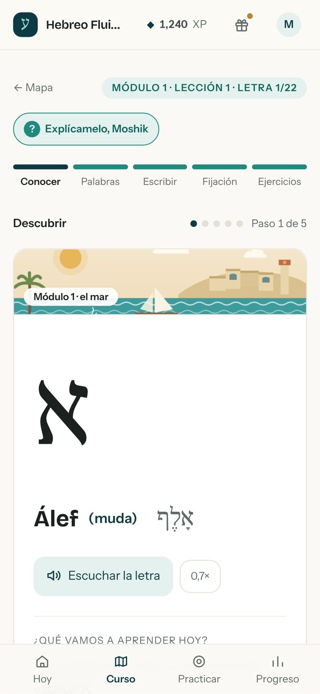
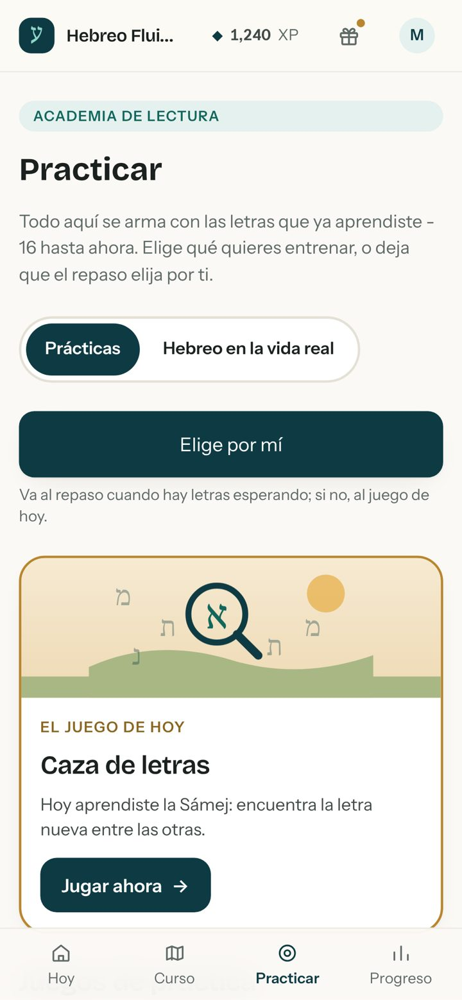
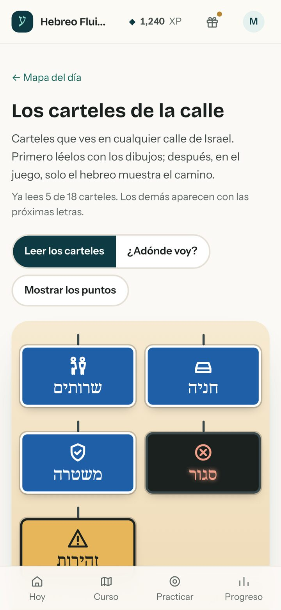

Así empieza el curso Hebreo Fluido. En pocos minutos conoces tres letras, escuchas mi pronunciación nativa y lees tu primera palabra en hebreo, por tu cuenta. Recuerda: el hebreo se lee de derecha a izquierda.
Las letras
Letra 1
א
Álef
No tiene sonido propio. א es un apoyo: existe para sostener la vocal que viene con ella. Pronuncias solo la vocal.
¿Sabías que...?אָלֶף tiene el mismo nombre que la letra fenicia que los griegos adoptaron como alfa, prima de nuestra א. Y alfa más beta dieron "alfabeto": la palabra que usas en español viene de esas dos letras griegas.
Letra 2
מ
Mem
Igual que la M del español, en madre, mesa, música. No hay nada nuevo que aprender en el sonido - solo en la forma.
¿Sabías que...? El nombre Mem viene de una palabra semítica muy antigua que quería decir "agua". Es de la misma familia que מַיִם (máyim), la palabra que todavía hoy quiere decir "agua" en hebreo.
Letra 3
ת
Tav
Como la T de "taco" - siempre seca, nunca con sonido de CH.
¿Sabías que...?ת es la última letra del alfabeto. Por eso la expresión que equivale a nuestro "de la A a la Z" en hebreo es מֵאָלֶף עַד תָו - de Álef a Tav.
Tu primera palabra
א+מ+ת
אֶמֶת
Émet significa verdad. Álef, Mem y Tav: las tres letras que acabas de conocer. Leíste hebreo.
אִמָא
Bonus: íma
Significa mamá, y también usa solo Álef y Mem.
Faltan 19 letras.
En el curso aprendes las otras 19 letras y las vocales, con explicaciones en español, mi voz en cada palabra y juegos para practicar.

Lecciones cortas

Juegos para practicar

Carteles de Israel
¿Quieres conocer las otras 19? Haz la prueba gratis
Prueba el curso antes de decidir: empieza gratis, a tu ritmo, desde el celular o la computadora.